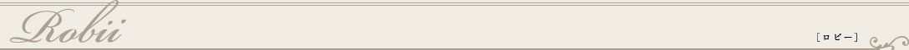

1866年オープン以来、政治、貴族、芸術と文化などあらゆる著名人が訪れており、ホテルの歴史を物語る写真がずらっと掲げられています。ホテル内部には、現在の女性オーナーの名画やアンティークコレクションがさり気なく飾られていて、クオリティーの高さも優雅な雰囲気作りに一役かっている。他のホテルに比類の無い重厚感も魅力的。
伝統的なザルツブルクのお料理が楽しめるレストラン。創業以来使用されている木製パネルの天井が、いい感じに温かく素晴らしい雰囲気の中で、高い評価のお食事を楽しむことができます。天気のよい日は、是非ともテラスでザルツブルクの絶景とともにご賞味を。
ここRestaurant “Roter Salon”でゲストはビュッフェの朝食を頂くことができる。世界遺産の旧市街を眺めながら頂く朝食は、ゲストならではの特権。ディナーは、オーストリアの郷土料理と西洋料理を温かいサービスと共に楽しめる。
客室は、クラッシックで洗練された優雅な雰囲気。おすすめは、川沿いのお部屋。ドアを開けると正面の大きな窓から光が降り注ぎ、その向こうには、ザルツァッハ河と旧市街の美しい街並みが見渡せます。大理石が使われたラグジュアリーなバスルームもセレブから愛されている理由だ。
Standard Rooms ：20～25平方メートル
Superior Rooms：30～35平方メートル